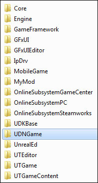
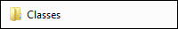
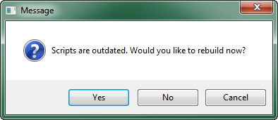
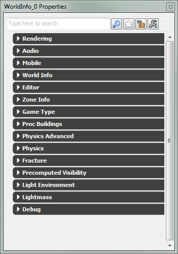
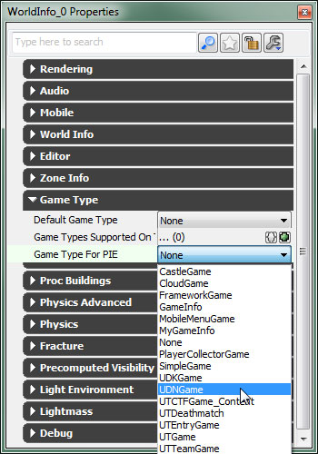
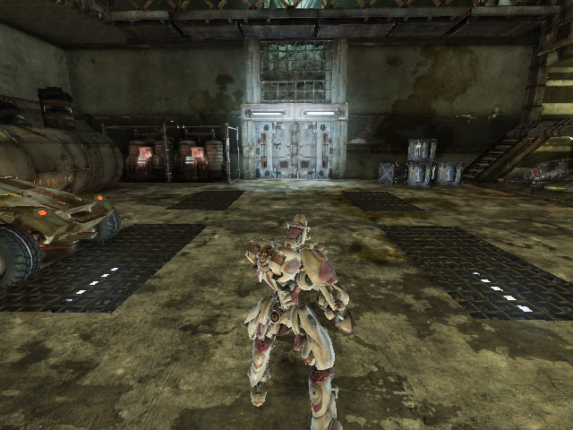

UDN
Search public documentation:
BasicGameQuickStartJP
English Translation
中国翻译
한국어
Interested in the Unreal Engine?
Visit the Unreal Technology site.
Looking for jobs and company info?
Check out the Epic games site.
Questions about support via UDN?
Contact the UDN Staff
中国翻译
한국어
Interested in the Unreal Engine?
Visit the Unreal Technology site.
Looking for jobs and company info?
Check out the Epic games site.
Questions about support via UDN?
Contact the UDN Staff
基本 : ゲーム開発のクイックスタート
概要
プロジェクトのセットアップ
UnrealScript プロジェクト
どのようなゲームプロジェクトであっても、新たに立ち上げる場合、結局のところ、UnrealScript を使用してカスタムクラスを作成し、ゲームのためのゲームプレイを形作ることになります。新たな UnrealScript を追加するには、カスタムの UnrealScript プロジェクトをセットアップすることによって、スクリプトを保持するようにします。このカスタムの UnrealScript プロジェクトは、新たな UnrealScript パッケージ (.u ファイル) にコンパイルされます。 UnrealScript プロジェクトを作成するには、まず、ご自分の「Unreal」インストレーションから..\Development\Src ディレクトリを見つけます。このディレクトリの中に、プロジェクト名を付けたフォルダを新たに作成します。通常このプロジェクト名は、ゲーム名を短縮してその後に Game を加えます。たとえば、「Unreal Tournament」というゲームであれば、 UTGame というプロジェクト名になります。
本ドキュメントで作成されるサンプルゲームの UnrealScript プロジェクトは、 UDNGame という名前になります。この新たなフォルダが作成されると、 ..\Developement\Src ディレクトリに置かれます。

このUDNGame フォルダの中に、 Classes という名前の新たなフォルダが作成されます。このフォルダが、プロジェクトのためのスクリプトを実際に保持します。

カスタムの UnrealScript プロジェクトをセットアップするための詳細なガイドが、 カスタムの UnrealScript プロジェクト のページに掲載されていますので参照してください。コンテンツ ディレクトリ
ゲームにはコンテンツが不可欠です。スクリーン上に表示するビジュアル的要素や再生するオーディオなどが必要となります。また、当然のことながら、コンテンツをすべてまとめてプレイヤーに提示するためには、マップが必要になります。通常、コンテンツはパッケージ内に保存されます (マップもパッケージです)。パッケージ自体は 「Unreal」インストレーションの..\[GameName]\Content ディレクトリに保存されます。通常、 Content ディレクトリには、 Characters や、 Environments 、 Maps 、 Sounds といったフォルダがあります。これらによって、コンテンツパッケージとマップを整理することができます。
「UDK」を使用する場合、これらのサブフォルダには、サンプルのコンテンツが入っています。ご自分のゲームのカスタム コンテンツパッケージとマップは、これらと同じフォルダに簡単に保存することができます。それによって、万事が完全に機能するはずです。ただし、カスタムのコンテンツを他のコンテンツとは別にしておきたい場合は、 Content ディレクトリの中に新たなフォルダを作成し (おそらくゲームの名前をつけることになるでしょう)、パッケージをこのフォルダに保存します。このフォルダの中にはさらにフォルダを追加することができます。これによって、 Content ディレクトリで行ったのと同様のやり方で、パッケージを整理することができます。
ゲームプレイ クラス
カメラ
あらゆるゲームの基本的な要素として、プレイヤーがどのような視点でワールドを見るかという問題があります。「Unreal」では、PlayerController クラスの GetPlayerViewPoint() 関数でプレイヤーの視点の位置と方向を扱います。デフォルトでは、プレイヤー カメラ オブジェクトがあれば、その計算を処理することができます。視点の位置と方向を計算する方法は、次の 2 つがあります。
-
UpdateCamera()関数からPawnにあるCalcCamera()関数を呼び出す。 -
UpdateCamera()関数内で直接、視点の計算をする。
UpdateCamera() 関数を利用して Pawn クラス内で実装することが可能です。ただし、次の 2 つの理由によって、カスタムの Camera クラスを使用してカメラの位置を扱うことにします。すなわち、カメラのロジックを独立したクラスによってカプセル化しておくためと、カメラクラスを使用することによって、カメラのあらゆる機能 (ポストプロセスやカメラアニメーションなど) にアクセスできるようにするためです。このサンプルゲームでは三人称視点を取りますが、カメラの位置と回転を計算するロジックを変更することによって、他のタイプのカメラも簡単に実装することができます。
カメラの技術ガイド には、カメラに関する詳細な説明と他の視点の実装例が掲載されています。
class UDNPlayerCamera extends Camera;
var Vector CamOffset;
var float CameraZOffset;
var float CameraScale, CurrentCameraScale; /** multiplier to default camera distance */
var float CameraScaleMin, CameraScaleMax;
function UpdateViewTarget(out TViewTarget OutVT, float DeltaTime)
{
local vector HitLocation, HitNormal;
local CameraActor CamActor;
local Pawn TPawn;
local vector CamStart, CamDirX, CamDirY, CamDirZ, CurrentCamOffset;
local float DesiredCameraZOffset;
// Don't update outgoing viewtarget during an interpolation
if( PendingViewTarget.Target != None && OutVT == ViewTarget && BlendParams.bLockOutgoing )
{
return;
}
// Default FOV on viewtarget
OutVT.POV.FOV = DefaultFOV;
// Viewing through a camera actor.
CamActor = CameraActor(OutVT.Target);
if( CamActor != None )
{
CamActor.GetCameraView(DeltaTime, OutVT.POV);
// Grab aspect ratio from the CameraActor.
bConstrainAspectRatio = bConstrainAspectRatio || CamActor.bConstrainAspectRatio;
OutVT.AspectRatio = CamActor.AspectRatio;
// See if the CameraActor wants to override the PostProcess settings used.
CamOverridePostProcessAlpha = CamActor.CamOverridePostProcessAlpha;
CamPostProcessSettings = CamActor.CamOverridePostProcess;
}
else
{
TPawn = Pawn(OutVT.Target);
// Give Pawn Viewtarget a chance to dictate the camera position.
// If Pawn doesn't override the camera view, then we proceed with our own defaults
if( TPawn == None || !TPawn.CalcCamera(DeltaTime, OutVT.POV.Location, OutVT.POV.Rotation, OutVT.POV.FOV) )
{
/**************************************
* Calculate third-person perspective
* Borrowed from UTPawn implementation
**************************************/
OutVT.POV.Rotation = PCOwner.Rotation;
CamStart = TPawn.Location;
CurrentCamOffset = CamOffset;
DesiredCameraZOffset = 1.2 * TPawn.GetCollisionHeight() + TPawn.Mesh.Translation.Z;
CameraZOffset = (DeltaTime < 0.2) ? DesiredCameraZOffset * 5 * DeltaTime + (1 - 5*DeltaTime) * CameraZOffset : DesiredCameraZOffset;
CamStart.Z += CameraZOffset;
GetAxes(OutVT.POV.Rotation, CamDirX, CamDirY, CamDirZ);
CamDirX *= CurrentCameraScale;
TPawn.FindSpot(Tpawn.GetCollisionExtent(),CamStart);
if (CurrentCameraScale < CameraScale)
{
CurrentCameraScale = FMin(CameraScale, CurrentCameraScale + 5 * FMax(CameraScale - CurrentCameraScale, 0.3)*DeltaTime);
}
else if (CurrentCameraScale > CameraScale)
{
CurrentCameraScale = FMax(CameraScale, CurrentCameraScale - 5 * FMax(CameraScale - CurrentCameraScale, 0.3)*DeltaTime);
}
if (CamDirX.Z > TPawn.GetCollisionHeight())
{
CamDirX *= square(cos(OutVT.POV.Rotation.Pitch * 0.0000958738)); // 0.0000958738 = 2*PI/65536
}
OutVT.POV.Location = CamStart - CamDirX*CurrentCamOffset.X + CurrentCamOffset.Y*CamDirY + CurrentCamOffset.Z*CamDirZ;
if (Trace(HitLocation, HitNormal, OutVT.POV.Location, CamStart, false, vect(12,12,12)) != None)
{
OutVT.POV.Location = HitLocation;
}
}
}
// Apply camera modifiers at the end (view shakes for example)
ApplyCameraModifiers(DeltaTime, OutVT.POV);
}
defaultproperties
{
CamOffset=(X=12.0,Y=0.0,Z=-13.0)
CurrentCameraScale=1.0
CameraScale=9.0
CameraScaleMin=3.0
CameraScaleMax=40.0
}
PlayerController
あらゆるゲームの基本的な要素としては、プレイヤーからの入力をどのように処理して、それをゲームの制御にどのように変換するかといった問題もあります。(なお、この場合の制御とは、オンスクリーンでメインキャラクターを直接制御するか、ゲームを制御するポイントアンドクリック方式のインターフェースを利用するか、ゲームを制御する他の方式を取るかに関わりません)。きわめて直感的には、プレイヤーのゲーム制御方法を決定すべきクラスは、PlayerController クラスです。
基本となる PlayerController を実装すると、プレイヤーを走り回らせることができます。プレイヤーの入力を処理して動きに変換することができるためです。サンプルで使用されているカスタムの PlayerController クラスは、先に作成したカスタムの Camera クラスを割り当てることになります。もちろん、ご自分のゲームを具体化する際は必ず、このクラスを修正して、ご自分のゲーム固有の実装に必要となるロジックを追加する必要があります。
キャラクター技術ガイド には、 PlayerController クラスに関する詳細な解説と、このクラスをカスタマイズして新たなタイプのゲームに適用する方法が掲載されています。
class UDNPlayerController extends GamePlayerController;
defaultproperties
{
CameraClass=class'UDNGame.UDNPlayerCamera'
}
Pawn (ポーン)
PlayerController クラスは、プレイヤーからの入力を使用してゲームを制御する方法を決定しました (このサンプルゲームではキャラクターを直接制御することも含みます)。一方、キャラクターの視覚的な表現、および、キャラクターと物理的なワールドとのインタラクトの仕方を決定するロジックは、 Pawn (ポーン) クラスでカプセル化します。今回のサンプルゲームで使われるカスタムの Pawn クラスでは、環境とのインタラクトに関する特別なロジックは一切追加されません。ただし、キャラクターの視覚的な表現がセットアップされます。したがって、ゲーム内でキャラクターを表示するために使用される骨格メッシュおよびアニメーション、物理アセットを設定する必要があります。
キャラクター技術ガイド には、 Pawn クラスに関する詳細な解説、ならびに、 PlayerController クラスと連携して機能させる方法に関する詳細な解説が掲載されています。
class UDNPawn extends Pawn;
var DynamicLightEnvironmentComponent LightEnvironment;
defaultproperties
{
WalkingPct=+0.4
CrouchedPct=+0.4
BaseEyeHeight=38.0
EyeHeight=38.0
GroundSpeed=440.0
AirSpeed=440.0
WaterSpeed=220.0
AccelRate=2048.0
JumpZ=322.0
CrouchHeight=29.0
CrouchRadius=21.0
WalkableFloorZ=0.78
Components.Remove(Sprite)
Begin Object Class=DynamicLightEnvironmentComponent Name=MyLightEnvironment
bSynthesizeSHLight=TRUE
bIsCharacterLightEnvironment=TRUE
bUseBooleanEnvironmentShadowing=FALSE
End Object
Components.Add(MyLightEnvironment)
LightEnvironment=MyLightEnvironment
Begin Object Class=SkeletalMeshComponent Name=WPawnSkeletalMeshComponent
//Your Mesh Properties
SkeletalMesh=SkeletalMesh'CH_LIAM_Cathode.Mesh.SK_CH_LIAM_Cathode'
AnimTreeTemplate=AnimTree'CH_AnimHuman_Tree.AT_CH_Human'
PhysicsAsset=PhysicsAsset'CH_AnimCorrupt.Mesh.SK_CH_Corrupt_Male_Physics'
AnimSets(0)=AnimSet'CH_AnimHuman.Anims.K_AnimHuman_BaseMale'
Translation=(Z=8.0)
Scale=1.075
//General Mesh Properties
bCacheAnimSequenceNodes=FALSE
AlwaysLoadOnClient=true
AlwaysLoadOnServer=true
bOwnerNoSee=false
CastShadow=true
BlockRigidBody=TRUE
bUpdateSkelWhenNotRendered=false
bIgnoreControllersWhenNotRendered=TRUE
bUpdateKinematicBonesFromAnimation=true
bCastDynamicShadow=true
RBChannel=RBCC_Untitled3
RBCollideWithChannels=(Untitled3=true)
LightEnvironment=MyLightEnvironment
bOverrideAttachmentOwnerVisibility=true
bAcceptsDynamicDecals=FALSE
bHasPhysicsAssetInstance=true
TickGroup=TG_PreAsyncWork
MinDistFactorForKinematicUpdate=0.2
bChartDistanceFactor=true
RBDominanceGroup=20
MotionBlurScale=0.0
bUseOnePassLightingOnTranslucency=TRUE
bPerBoneMotionBlur=true
End Object
Mesh=WPawnSkeletalMeshComponent
Components.Add(WPawnSkeletalMeshComponent)
Begin Object Name=CollisionCylinder
CollisionRadius=+0021.000000
CollisionHeight=+0044.000000
End Object
CylinderComponent=CollisionCylinder
}
HUD (ヘッドアップディスプレイ)
HUD クラスは、ゲームに関する情報をプレイヤーに表示します。情報とその表示方法は、ゲームによって極端に異なります。そのため、サンプルの実装では、ブランクのスレートを提供することによって、独自のカスタム HUD を作成できるようにしています。(その場合、 Canvas オブジェクトを使用するか、 Scaleform GFx を使用します)。
HUD 技術ガイド では、HUD の作成方法に関する詳細が掲載されています。 Canvas オブジェクト、あるいは Scaleform GFx 統合を「Unreal Engine 3」で使用する方法が紹介されています。
class UDNHUD extends MobileHUD;
defaultproperties
{
}
Gametype (ゲームタイプ)
ゲームタイプはゲームの心臓部です。これによって、ゲームのルールとゲームの進行 / 終了条件が決定されます。当然のことながら、ゲームタイプは完全にゲーム固有のものです。また、ゲームタイプは、PlayerControllers や Pawns 、 HUD などのために使用するクラスをエンジンに伝える役割を担います。ゲームタイプの実装例では、 defaultproperties (デフォルトプロパティ) でこれらのクラスを指定しており、残りの実装については各自に任されています。
ゲームプレイ 技術ガイド では、ゲームタイプの概念について詳細に説明されています。また、ゲームタイプをカスタマイズする際にどの部分を調整すべきかについても得るところがあるはずです。
class UDNGame extends FrameworkGame;
defaultproperties
{
PlayerControllerClass=class'UDNGame.UDNPlayerController'
DefaultPawnClass=class'UDNGame.UDNPawn'
HUDType=class'UDNGame.UDNHUD'
bDelayedStart=false
}
コンパイル
DefaultEngine.ini ファイルの [UnrealEd.EditorEngine] セクションにある EditPackages 配列にプロジェクトを追加します。 UDNGame プロジェクトを追加する構文は次のようになります。
+EditPackages=UDNGame
UTGame と UTGameContent プロジェクトです)。これらのプロジェクトは削除します。これらは、「UDK」とともに提供されている「Unreal Tournament 3」の見本ゲームのためのものだからです。繰り返しになりますが、今回のサンプルゲームの目標は、みなさん自身のゲームのために使用できる必要最低限の骨組みを作成することにあります。「Unreal Tournament」に類似するゲームを作成する場合は、これらの削除したプロジェクトを再度追加して、これらに基づいてクラスを作成するのも良いでしょう。それは、作成するゲームに基づいて各自で判断しなければならないことです。 [UnrealEd.EditorEngine] のセクションは、最終的に次のようになります。
[UnrealEd.EditorEngine] +EditPackages=UTGame +EditPackages=UTGameContent +EditPackages=UDNGame
-
Makeコマンドレットを実行する。 - Unreal Frontend からコンパイルする。
- ゲームまたはエディタを稼働させる。

Yes を選択すると、コンソールウィンドウが現れて、コンパイルのプロセスに関するステータスが表示されます。 このプロセスが成功すると、 Success - 0 error(s), 0 warning(s) が表示されます。エラーが発生した場合は、ファイル名とエラーの発生した行番号とともに、エラーの内容が表示されるため、すぐに見つけて修正することができます。
このプロセスが成功すると、 Success - 0 error(s), 0 warning(s) が表示されます。エラーが発生した場合は、ファイル名とエラーの発生した行番号とともに、エラーの内容が表示されるため、すぐに見つけて修正することができます。
 上記画像では、エラーが発生したファイル名の色がはっきりしています。行番号は、ファイル名の後に続く ( ) の中に表示されています。エラーの説明も表示されています。このエラーでは、等号 (=) の後に続く項目が無効であることが分かります。これの原因としては、名前のスペルミスや、変数が宣言されていないことなどが考えられます。エラーを修正して、上記と同じ手順で再度コンパイルすることによって、今度は成功するはずです。
上記画像では、エラーが発生したファイル名の色がはっきりしています。行番号は、ファイル名の後に続く ( ) の中に表示されています。エラーの説明も表示されています。このエラーでは、等号 (=) の後に続く項目が無効であることが分かります。これの原因としては、名前のスペルミスや、変数が宣言されていないことなどが考えられます。エラーを修正して、上記と同じ手順で再度コンパイルすることによって、今度は成功するはずです。
テスティング
- 「Unreal」エディタ内で、テストマップの
WorldInfoプロパティにおいて、UDNGameを PIE ゲームタイプとして設定する。(PIE: Play In Editor)。 -
DefaultGame.iniコンフィグファイルで、UDNGameをエンジンのデフォルトのゲームタイプに設定する。
UDNGame ゲームタイプをセットするには、[ View ] (ビュー) メニューから [ World Properties ] (ワールドプロパティ) を選択します。これによって、 WorldInfo プロパティ ウィンドウが現れます。

[ Game Type ] のカテゴリーを展開して、Gametype for PIE (PIE のためのゲームタイプ) プロパティを見つけます。使用可能なゲームタイプのリストから UDNGame を選択します。

これによって、 Play in Editor (エディタでプレイする) の機能か Play from here (ここからプレイする) の機能を使用して、エディタ内でマップを起動することができるようになりました。また、これらの機能では、カスタムのゲームタイプが使用され、自在に制御できるキャラクターをともなった三人称視点で表示されます。 これによって、 Play in Editor (エディタでプレイする) の機能か Play from here (ここからプレイする) の機能を使用して、エディタ内でマップを起動することができるようになりました。また、これらの機能では、カスタムのゲームタイプが使用され、自在に制御できるキャラクターをともなった三人称視点で表示されます。
また、 Default Game Type (デフォルトのゲームタイプ) プロパティをUDNGame にセットすることによって、.ini ファイルにおけるデフォルトの設定値 (以下で説明します) にかかわらず、カスタムのゲームタイプがマップによって使用されるように強制することもできます。
デフォルトのゲームタイプ
注意 : .ini ファイルを編集するときは、エディタが閉じられていなければなりません。
UDNGame のゲームタイプをデフォルトのゲームタイプとして設定するには、「Unreal」インストレーションの ..\[GameName]\Config ディレクトリから Defaultgame.ini コンフィグファイルを開きます。これによって、ゲームタイプがマップ URL で指定されていない場合か、マップのためのゲームタイプ プレフィックスが存在しない場合に、あらゆるマップのためにこのゲームタイプが使用されるようになります。 [Engine.GameInfo] セクションには、 UDNGame ゲームタイプを割り当てるプロパティが 3 つあります。また、 PlayerController クラスを割り当てるプロパティが 1 つあります。最後に、「Unreal Tournament 3」のサンプルゲームにしか使用されない、ゲームタイプのプレフィックスを設定している余分な行が数行ありますが、これは削除します。
最終的に、 [Engine.GameInfo] セクションは次のようになります。
[Engine.GameInfo] DefaultGame=UDNGame.UDNGame DefaultServerGame=UDNGame.UDNGame PlayerControllerClassName=UDNGame.UDNPlayerController GameDifficulty=+1.0 MaxPlayers=32 DefaultGameType="UDNGame.UDNGame"